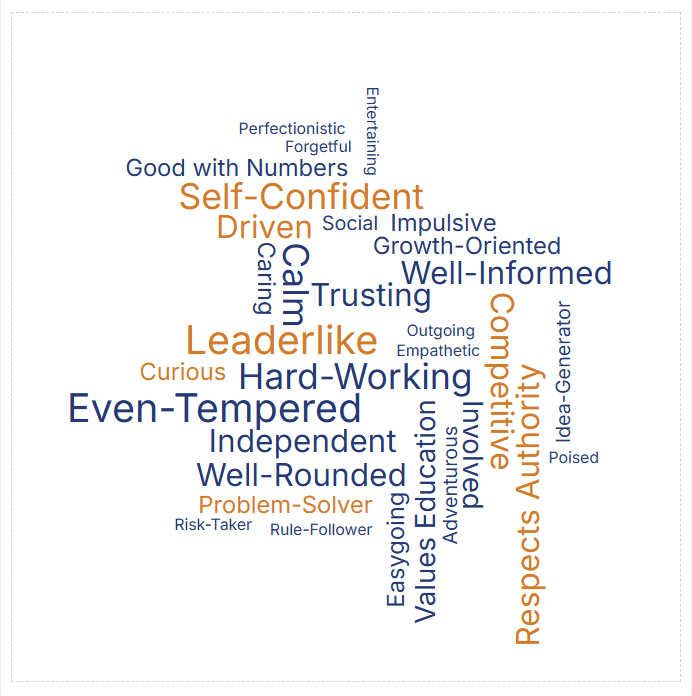
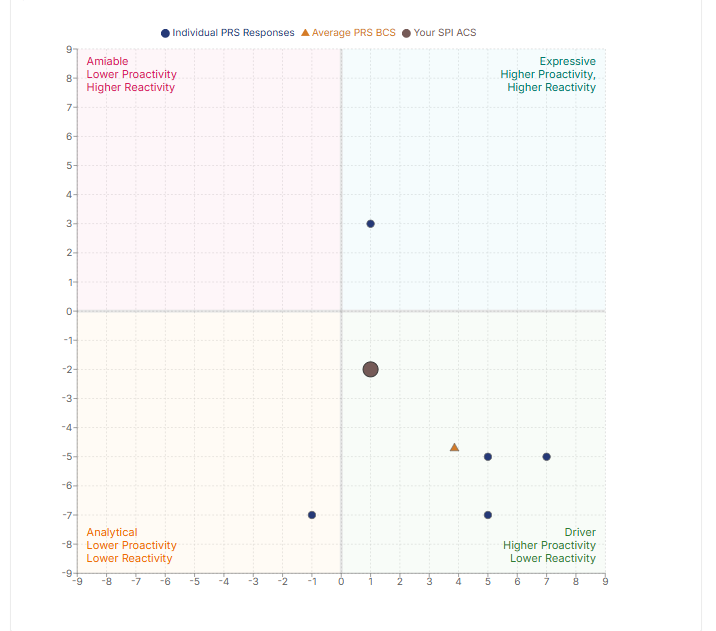
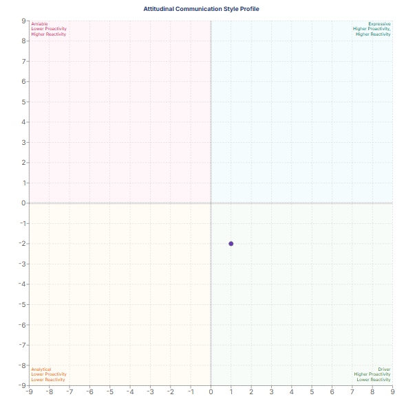

Professional Persona Evolution
Professional Persona Evolution
This section highlights my learning and growth journey driven by my values, shaped by my communication style, and strengthened by the reputation I continue to build.

"All around, Alex was really easy to work with and was constantly trying to do better. He kept us on track while working and made working in the team easier for all of us. He could work on giving himself more credit when he does a good job. He tends not to see where he is improving and only focuses on where he needs to improve. If he focuses on how he improved instead of being hard on himself, he'll do better." - Peer Feedback, BCOM 314 Team Evaluation
Core Value Exploration
Through my leadership and team experiences at Eller, I've explored how my values, including connection, growth, and purpose, shape my approach in professional settings. My goal was to understand how closely my self-perception aligned with how others see me in professional settings.
I reflected on my Self-Perception Inventory, Professional Reputation Survey, and 360 evaluations through my BCOM 314 class to identify overlaps between my identity and reputation. I described myself as leaderlike, driven, and competitive. These traits reflect my commitment to building relationships, learning, and achieving meaningful results.
My peers reinforced these qualities, often describing me as leaderlike, confident, and self-motivated. Their feedback confirmed that I naturally demonstrate connection through collaboration, growth through inquiry, and purpose through results. I learned that my core values are not only visible to others but also shape my professional reputation. Moving forward, I plan to continually refine my communication and leadership skills to ensure that how I connect, grow, and contribute always reflects the professional I strive to be.
Behavioral Communication Research Findings


My Self-Perception Inventory (SPI) results placed me in the Driver quadrant, which reflects my internal view of myself as a confident, goal-oriented individual who values efficiency and results. This aligns with my core values of growth and purpose, as I am driven to achieve meaningful outcomes and continuously improve. I see myself as someone who takes initiative, leads with confidence, and is comfortable making decisions to move projects forward. This self-perception is consistent with how I approach leadership and teamwork, where I often take on a motivating and organizing role to ensure that goals are met effectively.
In contrast, the Professional Reputation Survey and 360 evaluations from my BCOM 314 class placed me in the Expressive quadrant, which reflects how others perceive me as warm, enthusiastic, and engaging. This suggests that while I see myself as a Driver, others see me as someone who also brings energy and connection to my interactions. The overlap between these quadrants indicates that my communication style is a blend of both Driver and Expressive traits, which can be a powerful combination for leadership and collaboration. Understanding this dynamic has helped me recognize the importance of balancing my drive for results with my natural ability to connect with others, and I plan to continue developing both aspects of my communication style to enhance my professional persona.
These insights have been invaluable in helping me understand how my internal identity aligns with my external reputation, and they will guide me as I continue to evolve my professional persona in a way that is authentic and effective.
Team Culture Findings
Through my team experiences in BCOM 314, I've observed how my communication style and leadership approach influence team culture and dynamics. In one of our key projects, I naturally took on a leadership role, organizing our efforts, setting clear goals, and ensuring that we stayed on track. My peers often described me as a reliable and motivating presence who helped keep the team focused and productive. I consistently led by example, preparing thoroughly for meetings, initiating discussions, and ensuring tasks were clearly divided. My focus on communication and encouragement helped sustain momentum, especially during high-pressure periods. At the same time, I worked on stepping back to let others lead at moments, encouraging shared ownership. Feedback from my peers highlighted my leadership, organization, and reliability as key drivers of our team's success.
I also learned that my drive for excellence can sometimes make me appear most comfortable when I'm in control. Recognizing this has been an essential step in my growth as a leader. I'm learning to delegate more effectively, trust others' abilities, and create space for teammates to showcase their strengths. This balance not only strengthens team dynamics but also leads to more collaborative and creative outcomes. These experiences continue to help me align my personal identity with my professional reputation, fostering authentic leadership built on both confidence and connection.

"Alex, great work this session. No specific points of feedback. You are direct and straight to the point in team dynamics and contribute your part without fuss. You ask questions when necessary and seek clarification as applicable"
"All around, Alex was really easy to work with and was constantly trying to do better. He kept us on track while working and made working in the team easier for all of us. He could work on giving himself more credit when he does a good job. He tends not to see where he is improving and only focuses on where he needs to improve. If he focuses on how he improved instead of being hard on himself, he'll do better."
Identity · Brand · Perception
Through class debriefs and discussions with my Professional Persona partners, I've gained a clearer understanding of how my warmth and competence scores from Radian reflect where I naturally land: in the Charismatic Zone. This means that those around me tend to perceive me as both approachable and capable — someone who is trustworthy and effective in equal measure. That balance is something I don't take for granted, and these reflections have pushed me to be more intentional about how I show up.
Peer feedback has confirmed what the data suggests: I'm seen as a confident, initiative-taking leader who gets things done. But what makes that feedback feel meaningful is that it doesn't stop there. Colleagues also experience me as someone they can connect with — not just a driver of outcomes, but a genuine presence on the team. That combination of confidence and warmth is what the Charismatic Zone is built on, and I'm learning to lead from that place more deliberately.
That said, landing in the Charismatic Zone isn't a destination — it's a balancing act. I've recognized that my drive for excellence can sometimes pull me toward control rather than collaboration, which puts pressure on one side of that equation. So my growth edge has been learning to delegate, to trust the strengths of the people around me, and to create space where others can lead too. Doing so doesn't diminish my confidence — it actually deepens my warmth, and keeps both sides of my charisma profile strong.
As I move forward, I'm equally focused on sustainability. Charismatic leadership can be demanding, and I'm becoming more aware of the cognitive and emotional energy it requires to show up fully for others while still showing up for myself. Authentic leadership, I'm learning, means knowing how to protect that energy so the confidence and connection I bring to a room stays genuine — not performed.
Growth Mindset
My growth mindset has been a critical driver of my professional persona evolution. I approach every experience — whether it's a team project, presentation, or feedback session — as an opportunity to learn and improve. This mindset has allowed me to embrace challenges, persist through setbacks, and see effort as a path to mastery. For example, when I receive constructive feedback, I don't take it personally; instead, I analyze it for insights on how I can grow. This has helped me develop resilience and a proactive approach to self-improvement.
As I continue to evolve my professional persona, I plan to maintain this growth mindset by seeking out new challenges, asking for feedback regularly, and reflecting on my experiences to identify areas for development. I believe that this mindset will not only help me become a better communicator and leader but also allow me to adapt and thrive in any professional environment I find myself in.